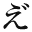

え゛りと・え゛りたす
辻潤
●本文中、底本のルビは「（ルビ）」の形式で処理した。
●本文中、［※１〜３］は底本からの変更部分などに関する入力者注を表す。注はファイルの末尾に置いた。
なんのためにフランスなぞへいくのか？ 旅行免状にはちゃんと「文学研究」と書いてある。自分は文士だからフランスへ文学の研究に行くのだ―それ以上に私はあまり考えたくはないのだ。
昔は「洋行」という言葉に恐ろしい価値があってまるで神様の「護符」でも戴くような気持のする時代もあった。猫も杓子（しゃくし）も洋行さえすれば肩で風を切って歩いてもさしつかえないという様な馬鹿気た時代もあった。今ではどうか？ 洋行をするとかえって生れた国の時勢に遅れるような気がする位だ。
自分は少年の時からハイカラでとかく西洋臭いことが好きだった。十五六の時分にはもう一人前のクリスチァンで、横文字の書物にばかり読み耽った。
内村鑑三先生の「警世雑著」を愛読している時分、ひどく先生の影響を受けて米国のカレッジ熱に浮され、金の問題はそッちのけにしてしきりに入学試験の研究に耽った。昔から、自分の家と深い関係のある或るブルジョアのところへ出かけて洋行費を出してくれと頼みこんだこともあったが、勿論ものにはならなかった。
武林無想庵と叡山（えいざん）で暮らしている頃、無想庵は私をパリへ連れて行ってくれるようなことをいっていたから楽しみにしていたのだが中平文子にひッかかったので私の洋行もフイになった。
三四年前、谷崎潤一郎君が洋行をしかけた時も、私はどうかして一緒に出かけたいと思って色々奔走したが、当の谷崎君が中止をしてしまったので自然私の方も立ち消えになった。
震災後、私は東京にいるのが不愉快なのであちこちと田舎まわりをしながら暮らした、気まぐれに朝鮮の方まで出かけた。――つまりこの四五年というものは殆んど旅で暮らしていたので、在京の諸友とも従って遠ざかり勝でひどく御無沙汰をしてしまった。物を書くよりも私はひとり勝手放題に山川を放浪して歩いている方に自分の芸術的感興？ を見出していた。
私は一昨年の春頃から或る人の温情によって大岡山へ移り住むようになった。そうして僅か一年半位の間に四度引越しをした。現在の家はその四度目の家なのだ。この一年有半の生活はまッたく言語に絶した窮迫ぶりで、到底他人の窺い知ることの出来ぬ程に徹していたのだが、私はそれを耐え忍ぶことに興味？ を覚えた。負け惜しみと笑わば笑え！ 強情と罵らば罵れ！
さて、風の吹きまわしで私は卒然として洋行することになった。まったく棚ボタである。寝耳に水である。しかし、時節が到来して多年な宿望が達せられたわけだ――しかも自分のと名のつく金でだ――まったく人間万事塞翁（さいおう）が馬であると、とりあえず喜んで見たのだがひるがえって考えると少からず「季節外れ」感があるのだ。
自分も今では立派な四十男なのだ。人間四十有余歳にもなれば、どんな阿呆でも、一通り世の中がわかり、娑婆の合点がゆく筈である。自分がどんな性情な持主であり、どれ程の才能があるか位は見当がつく筈だ。フランスへ行ったからといって、忽然（こつぜん）として生れかわるわけではない位なことは自分と雖（いえど）も万々承知はしているつもりである。
さて、私もひとりの文学者ではある、というよりもいつまでも幼稚な文学書生をもって自任しているのだ。私が今迄に全体どんなことをしたか、どの位な文学上の仕事をしたかと考えて見るとまったくお恥かしい次第なのである。だから私は御苦労にもヨーロッパくんだりまで出かけ、もう少し了見を改めて自分のダダ的精神に研（と）ぎをかけて見たいと考えているのだ。
私が日本の現在の文学をどんな風に考えているかということはしばらくお預かりとして少くとも自分の「文学」はまだまだ駄目だということだけを私は痛感しているのだ。他人がどんなにすぐれた「文学」を製作しようが、自分のものが駄目ならまったく駄目なのだ。
私の思想や、生活状態がどんなものであるかということはみなさん先刻承知の筈である。私が西洋へ行ったからといって、それ等のものが遽（にわか）に改まるわけのものではあるまい。
私は自分の洋行をなにか特別な意味に考えたくはないのだ。今まで日本のあちこち［＃「あちこち」に傍点］を歩きまわった延長だと考えたい。至極アッサリした気持で出かけたいのだ。ただ困ったことには生れて初めて「海外文学特置員」などという厄介な大任を背負わされたことだ。自分は果してよく期待にそむかないような仕事をなしおうせるかどうか勿論やって見なければならないが、今の自分の気待では出来るだけやって見る積りだ。だが「待て！ しかして見よ！」などと妙チクリンな言葉は発しないからその点は安心してもらいたい。
私は頭がハイカラな癖に、身体ときたらコイツ恐ろしく東洋人なのだ。特に「食物」の点に至ってはひどいエドッ子なのだ。「食い物」のことを考えると私はもう一溜りもなく悄気かえって「洋行」なんぞ問題じゃないのだ。若し私が西洋に行ってホームシックに罹ったとしたら母親や、恋人（ありや？ なしや！）のことを考え出すよりも、一番に味噌汁や香ノ物のことに思い到るであろう。
それから、同行の子供［※１］のことだが、初めは連れて行くつもりでもなかったが、子供がしきりに行きたがるし、考えて見ると、日本で中学程度の学業を終えたところで自分だけの飯が食えるか食えないかまったくわからないという程の御時勢なのだ。考えるとまったく慄然たらざるを得ない。それに入学試験という児童等にとって世にも恐ろしい難関がある、一体これからの子供達――特に貧乏人の子供達はどうして生きてゆかれるか賢明な御仁に伺いたい位なものでありやす。
幸い私と同行する息子は多少の画才があるので、向うへ行ってまかりまちがえば画描き（になられてはオヤジは実は閉口なのだが）になる可能性がありそうなので、当人の為めには向こうへ連れて行く方がいいじゃないか［※２］という漠然とした気持から連れて行く気になったのだが、もとよりアバンチュールである。しかし、日本にいて銀座をブラつくモダンボーイになるよりはパリのモンマルトルでアパッシュになった方がまだしも気が利いているかも知れない、これはジョークだが、私はまったく駒の出ないことを心から祈っているのだ。
このアンチ・ビジネスマンは船へでも乗らない限り、一向まだ西洋に出かけるような気がしないのだ。しかし、道草を食い過ぎて乗り遅れるようなことがあっては大変だから、ゆっくり原稿も書いていられない始末だ。
出発前に出来るだけ世間の義埋を片付けて行きたいと思ったが、思うばかりで一向にハカがゆかず、グズグズしている間に東京駅を出発することになってしまった。では諸君御機嫌よう。
Au revoir!［※３］ （一九二八年一月）
入力者注：題名に使われている「え゛」は底本では下のグラフィックのような「え」に濁点の一字。題名は、仏語
ve'rite'、ラテン語 veritas （共に真実の意味）辺りに由来すると思う。
※１＝「同行の子供」というのは、辻潤と伊藤野枝との間に生まれた長男、辻一（つじまこと。1920-1975）のことである。彼は当時静岡県の中学生であった。ここに述べられて居る通り、彼は絵描きになりたくて、学校を中退してパリに連れていって貰った訳であるが、このパリ時代が、彼と辻潤が長時間一緒に暮らした唯一の時代である。彼はルーブルなどで実物の絵に接して、絵描きになることをあきらめた、しかし、戦後自分で書いた略歴に、絵描きのような職業をして現在に至ると書いて居るように、美しい絵を書く画家でもあった。また、すぐれた詩人、文明批評家でもあり、登山、スキー、岩魚釣り、ギターなど多彩な才能を示した人物でもあった。私見だが、辻潤を知るためには、辻一が辻潤について書いた文章は必須のものである。しかし彼は父親辻潤に言及されることを嫌い、その遺言は、辻潤と同じ墓に葬ってくれるなであった。
※２＝底本「いいじゃいか」を「いいじゃないか」に訂正
※３＝底本「An revoir」
底本：「辻潤著作集1 絶望の書」オリオン出版社
1969（昭和44）年11月30日初版発行
※表現のおかしい箇所は、「辻潤選集 玉川新明編」五月書房、1981（昭和56）年10月11日初版を参照して訂正した。
入力：et.vi.of nothing
校正：et.vi.of nothing
ファイル作成：et.vi.of nothing
1999年1月24日公開
1999年9月6日修正
青空文庫作成ファイル：
このファイルは、インターネットの図書館、青空文庫（http://www.aozora.gr.jp/）で作られました。入力、校正、制作にあたったのは、ボランティアの皆さんです。